2026年の夏、日本は世界中の旅行者を魅了する最高のデスティネーションです。伝統的な夏祭りから息をのむ絶景ビーチ、涼しい避暑地まで、日本の夏は多彩な体験であふれています。日本政府観光局（JNTO）の最新データによると、2026年の訪日外国人旅行者数は過去最高を更新する見込みです。
本記事では、PROTECHが2026年最新の訪日観光データをもとに厳選した夏に絶対行くべき日本の観光スポット15選を、エリア別にアクセス情報・見どころ・ベストシーズンとともに徹底ガイドします。2026年の訪日外国人観光客トレンドもあわせてご参照ください。
1 沖縄・慶良間諸島 ― 世界屈指の透明度を誇るビーチリゾート
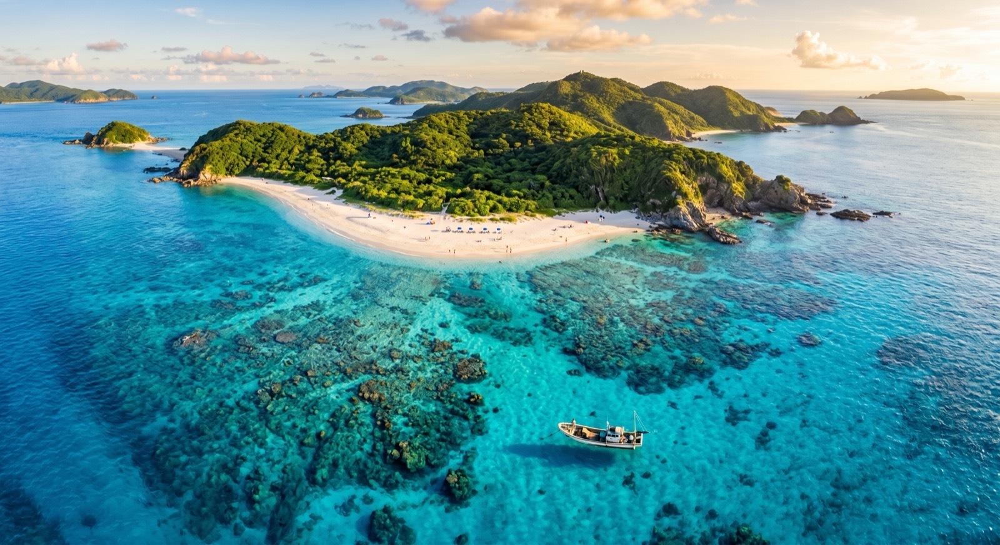
エリア：沖縄県・那覇市から船で約50分 ベストシーズン：6月下旬〜9月
慶良間諸島は「ケラマブルー」と呼ばれる世界トップクラスの透明度を誇る海で知られ、2014年に慶良間諸島国立公園に指定されました。座間味島・渡嘉敷島・阿嘉島の3島を中心に、シュノーケリング・ダイビング・ウミガメウォッチングなど、夏ならではのマリンアクティビティが楽しめます。
📍 アクセス・実用情報
- 那覇・泊港からフェリー：高速船で約50分（座間味島）、約35分（渡嘉敷島）
- 費用目安：高速船往復 約6,000〜7,000円
- 予約のコツ：夏休みシーズン（7〜8月）は高速船が満席になるため、2週間前までの事前予約が必須
- おすすめビーチ：古座間味ビーチ（ミシュラン・グリーンガイド二つ星）
2 京都・伏見稲荷大社 ― 千本鳥居と幻想的な夏の夜間ライトアップ
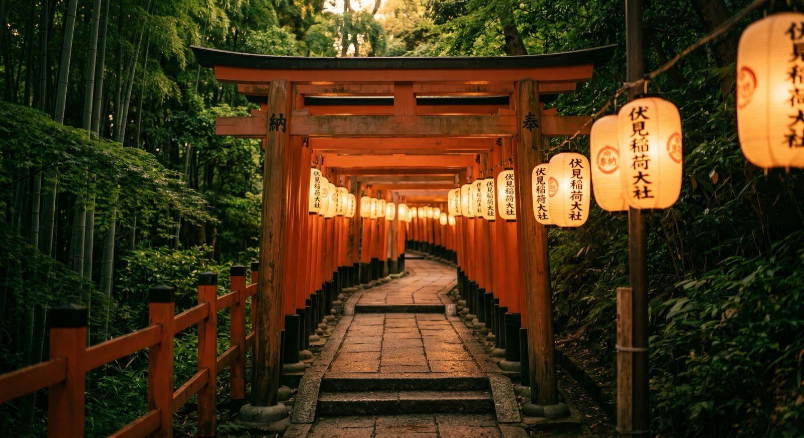
エリア：京都府京都市伏見区 ベストシーズン：7月〜8月（本宮祭 7月下旬が特におすすめ）
伏見稲荷大社は約1万基の朱色の鳥居が連なる「千本鳥居」で世界的に有名な神社です。2026年の夏は7月下旬の本宮祭が特におすすめ。境内に数千個の提灯が灯される「万灯神事（まんとうしんじ）」は幻想的で、SNS映え抜群の写真が撮影できます。伏見稲荷大社公式サイトで最新イベント情報をチェックしましょう。
📍 アクセス・実用情報
- 電車：JR奈良線「稲荷駅」下車すぐ、京阪「伏見稲荷駅」徒歩5分
- 拝観料：無料（24時間参拝可能）
- 撮影のコツ：早朝5〜6時は観光客が少なく、朝日に照らされた鳥居の写真が撮れる
- 周辺グルメ：参道の「スズメの丸焼き」「きつねうどん」が名物
3 北海道・富良野のラベンダー畑 ― 紫一色に染まる丘の絶景
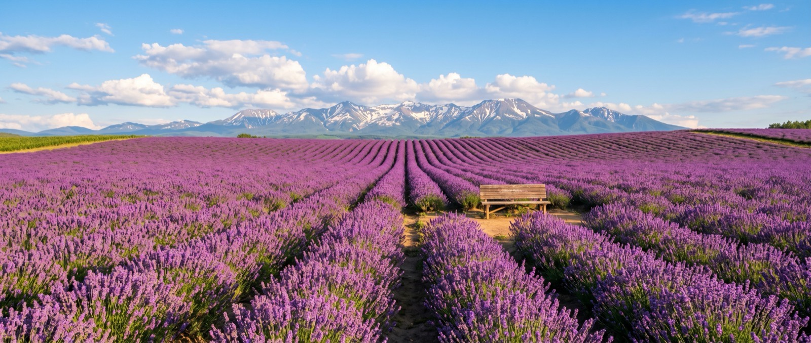
エリア：北海道富良野市・中富良野町 ベストシーズン：7月上旬〜7月下旬
北海道・富良野のラベンダー畑は、夏の日本を代表する絶景スポットです。特にファーム富田は入場無料で約15ヘクタールのラベンダー畑が広がり、紫色のグラデーションと十勝岳連峰の雄大な景色のコントラストは息をのむ美しさです。
📍 アクセス・実用情報
- 電車：JR富良野線「ラベンダー畑駅」（夏季限定臨時駅）下車徒歩7分
- 車：旭川空港から約45分
- 入場料：無料
- おすすめ：ラベンダーソフトクリーム（350円）、ラベンダーエッセンシャルオイルのお土産
- 混雑回避：平日の午前中がベスト。7月中旬の土日は非常に混雑
4 東京・隅田川花火大会 ― 日本最大級の夏の風物詩
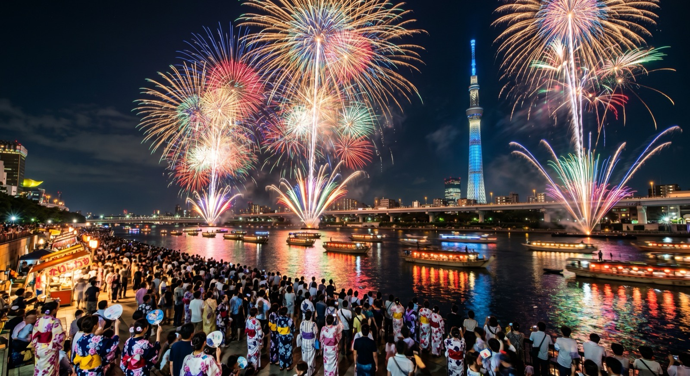
エリア：東京都台東区・墨田区（隅田川沿い） 開催時期：2026年7月最終土曜日
隅田川花火大会は1733年から続く日本最古の花火大会の一つで、約2万発の花火が東京の夜空を彩ります。2026年は第49回の開催予定で、第一会場・第二会場合わせて約95万人が来場する日本最大級の花火大会です。浅草周辺で浴衣をレンタルして観覧するのが定番の楽しみ方です。
📍 アクセス・実用情報
- 最寄駅：東京メトロ銀座線「浅草駅」、都営浅草線「本所吾妻橋駅」
- 費用：河川敷からの観覧は無料、有料席は7,000〜12,000円
- 穴場スポット：汐入公園（南千住）、タワーホール船堀の展望台
- 注意点：駅周辺は入場規制がかかるため、16時までに現地到着がおすすめ
- 浴衣レンタル：浅草周辺で3,000〜5,000円で浴衣レンタル可能
5 長野・上高地 ― 日本アルプスの清流と大自然の避暑地
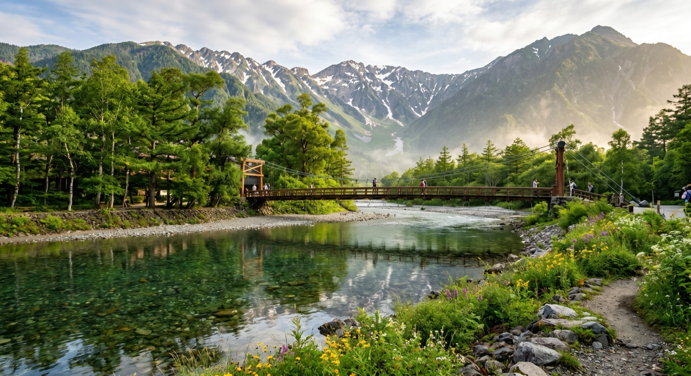
エリア：長野県松本市（標高約1,500m） ベストシーズン：7月〜8月
上高地は標高約1,500mに位置する日本屈指の山岳リゾートで、夏でも平均気温が20℃前後と快適な避暑地です。穂高連峰を背景にした河童橋からの眺望は日本を代表する山岳景観として知られ、梓川の透明なエメラルドグリーンの水面は「日本一美しい渓流」とも評されています。上高地公式ウェブサイトで開山状況をチェックしましょう。
📍 アクセス・実用情報
- バス：松本バスターミナルから約1時間30分（マイカー規制のため自家用車不可）
- 費用：バス往復 約4,800円
- おすすめルート：河童橋→明神池→徳沢（往復約4時間のハイキングコース）
- 宿泊：上高地帝国ホテル、上高地ルミエスタホテルが人気（要事前予約）
- 注意：11月中旬〜4月中旬は冬季閉山。ゴミ持ち帰り必須
6 広島・宮島（厳島神社）― 海に浮かぶ世界遺産の大鳥居
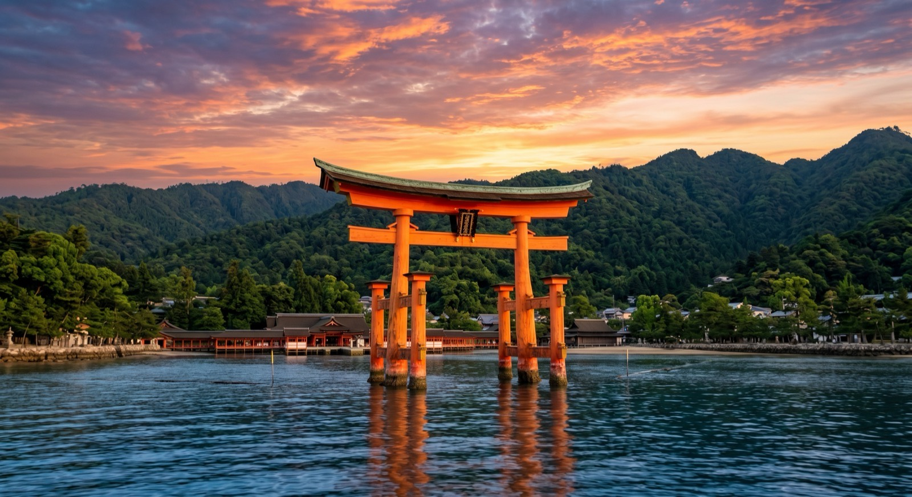
エリア：広島県廿日市市（はつかいちし） ベストシーズン：6月〜9月
宮島の厳島神社は、干潮時には大鳥居まで歩いて近づけ、満潮時には海に浮かぶように見える幻想的なユネスコ世界遺産です。2026年は大鳥居の大規模修繕が完了し、新しく塗り直された朱色の大鳥居が鮮やかに輝いています。夏は宮島水中花火大会が開催され、大鳥居のシルエットと花火のコラボレーションは圧巻の絶景です。
📍 アクセス・実用情報
- フェリー：JR宮島口駅からフェリーで約10分
- 拝観料：厳島神社 大人300円
- おすすめグルメ：焼き牡蠣（1個200円〜）、もみじ饅頭、あなご飯
- 干潮・満潮チェック：事前に潮見表を確認し、両方の景色を楽しむのがおすすめ
- 弥山登山：ロープウェイで山頂付近まで行け、瀬戸内海の360度パノラマが楽しめる
7 青森・ねぶた祭 ― 巨大灯籠が練り歩く日本を代表する夏祭り
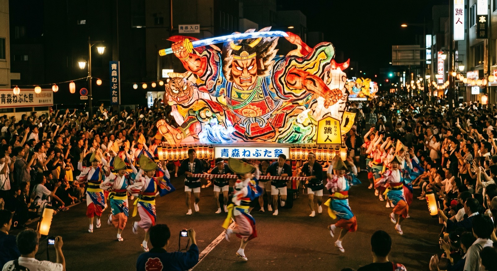
エリア：青森県青森市中心部 開催時期：毎年8月2日〜7日
青森ねぶた祭は、高さ5m・幅9mにも及ぶ巨大な灯籠（ねぶた）が市内を練り歩く、日本を代表する夏祭りです。毎年300万人以上が来場する国の重要無形民俗文化財で、「ラッセラー、ラッセラー」の掛け声と太鼓のリズムに合わせて踊る「跳人（はねと）」に一般観光客も参加できます。2026年のインバウンドカレンダーで他の祭りもチェックしましょう。
📍 アクセス・実用情報
- 電車：東北新幹線「新青森駅」からJR在来線で約6分「青森駅」下車
- 跳人参加：正規の衣装（約10,000円でレンタル可）を着れば誰でも参加OK
- 有料観覧席：約3,500円（事前予約制）
- 宿泊：期間中は青森市内のホテルが満室になるため、3ヶ月前までの予約推奨
- 最終日（8月7日）：昼のねぶた運行＋夜の海上運行・花火大会が最大の見どころ
8 石川・金沢の茶屋街 ― 風情ある城下町の夏散歩
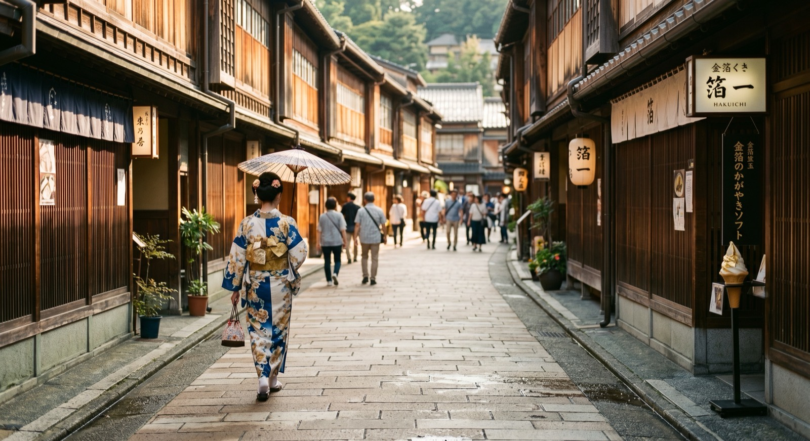
エリア：石川県金沢市 ベストシーズン：6月〜9月
金沢のひがし茶屋街は、江戸時代の格子戸の町家が並ぶ情緒あふれるエリアです。夏は金箔ソフトクリーム片手に石畳の小路を散策するのが人気。2026年は北陸新幹線の延伸効果もあり、アクセスがさらに便利になっています。
📍 アクセス・実用情報
- 電車：北陸新幹線「金沢駅」からバスで約10分、またはタクシーで約7分
- 費用目安：金箔ソフトクリーム 約900円、加賀棒茶体験 約1,500円
- おすすめ：金沢21世紀美術館（入館無料エリアあり）、兼六園（夏季は早朝無料開園あり）
- 着物レンタル：3,000〜8,000円で着物レンタル・着付けが可能。茶屋街での撮影がSNS映え抜群
- 周辺グルメ：近江町市場で海鮮丼（1,500〜3,000円）、治部煮（じぶに）
9 鹿児島・屋久島 ― 世界自然遺産の苔むす森と夏トレッキング
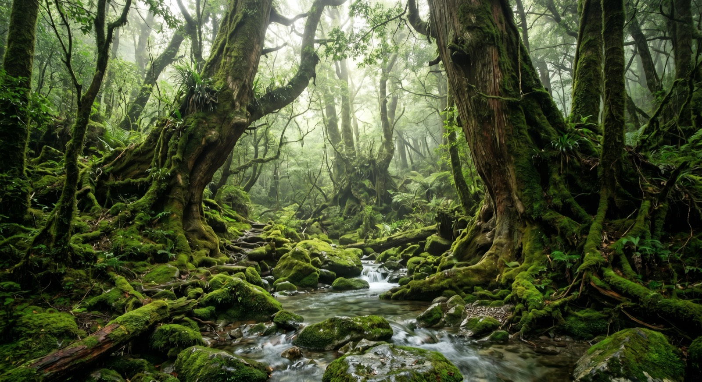
エリア：鹿児島県屋久島町 ベストシーズン：7月〜8月（梅雨明け後）
屋久島は1993年に日本初のユネスコ世界自然遺産に登録された島で、樹齢7,200年ともいわれる縄文杉や、映画『もののけ姫』のモデルとなった白谷雲水峡の苔むした幻想的な森が有名です。夏は梅雨明け後の7月下旬以降がベストシーズンで、緑が最も鮮やかな時期です。
📍 アクセス・実用情報
- 飛行機：鹿児島空港から屋久島空港まで約35分（JAC便）
- フェリー：鹿児島港から高速船「トッピー」で約2時間
- 縄文杉トレッキング：往復約10時間、ガイド付きツアー 約15,000〜25,000円
- 白谷雲水峡：往復約3〜5時間、入場料 500円
- 注意：年間降水量が非常に多いため、レインウェアは必須。登山届の提出が必要
10 大阪・道頓堀＆天神祭 ― 食い倒れの街で夏のグルメ三昧
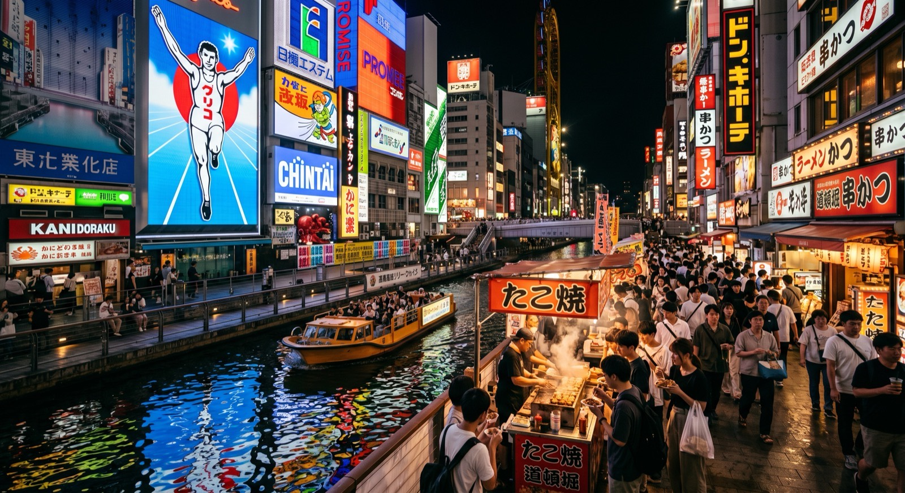
エリア：大阪府大阪市中央区・浪速区 ベストシーズン：通年（天神祭 7月24〜25日が特におすすめ）
大阪の道頓堀は、巨大なグリコの看板やかに道楽の動くカニなど、派手なネオン街として世界的に有名です。2026年夏は天神祭（7月24〜25日）の時期がベスト。日本三大祭りの一つで、大川に100隻以上の船が浮かぶ「船渡御（ふなとぎょ）」と約5,000発の奉納花火は大阪の夏の最大イベントです。訪日外国人の消費行動データでも大阪は常にトップクラスの人気エリアです。
📍 アクセス・実用情報
- 最寄駅：地下鉄御堂筋線「なんば駅」、近鉄「大阪難波駅」
- おすすめグルメ：たこ焼き（500〜800円）、串カツ（1本100〜200円）、お好み焼き（800〜1,500円）
- 新世界：通天閣展望台（900円）、ジャンジャン横丁の串カツ食べ歩き
- 天神祭観覧：桜之宮公園が無料の絶好観覧スポット
- ナイトライフ：法善寺横丁の老舗バーや裏なんばの隠れ家居酒屋も人気
11 山梨・河口湖 ― 富士山×ラベンダーの絶景コラボレーション
エリア：山梨県富士河口湖町 ベストシーズン：6月下旬〜7月中旬
河口湖は富士五湖の一つで、夏は河口湖ハーブフェスティバルが開催され、約10万株のラベンダーと富士山が同時に楽しめる絶景スポットとして人気です。湖畔をサイクリングしながら富士山の雄姿を眺めたり、SUP（スタンドアップパドル）で湖上から富士山を望む体験も2026年のトレンドです。
📍 アクセス・実用情報
- バス：新宿から高速バスで約1時間45分（約2,200円）
- 電車：JR中央線「大月駅」から富士急行線で約55分「河口湖駅」
- おすすめ体験：河口湖遊覧船（1,000円）、カチカチ山ロープウェイ（往復900円）
- 宿泊：富士山ビューの温泉旅館が人気。星のや富士（グランピング施設）も注目
- 撮影スポット：大石公園のラベンダー畑越しの富士山が定番の構図
12 高知・仁淀川 ― 「仁淀ブルー」日本一の清流で夏遊び
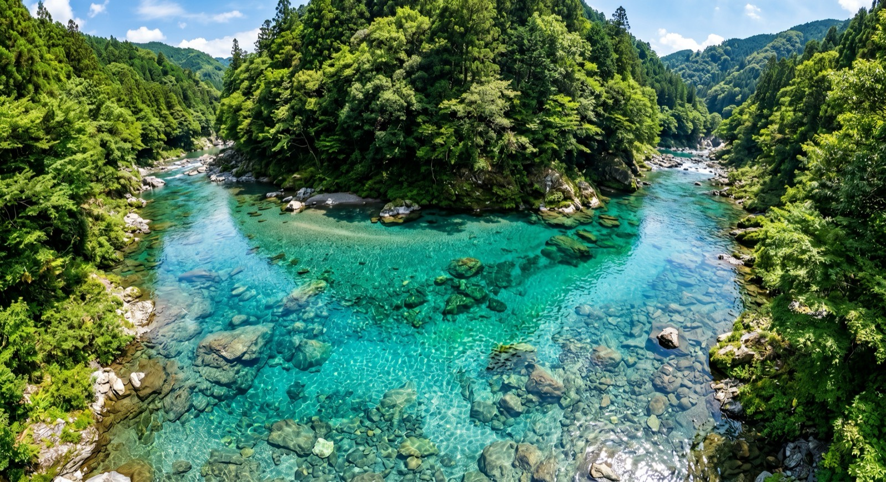
エリア：高知県仁淀川町・いの町・越知町 ベストシーズン：7月〜8月
仁淀川は国土交通省の水質調査で何度も「日本一の清流」に選ばれた川で、その透明度の高い青色は「仁淀ブルー」と呼ばれ、近年SNSで爆発的に話題になっています。夏はSUP・カヌー・川泳ぎ・キャニオニングなどのアクティビティが充実し、特に「にこ淵」の神秘的な青い淵は息をのむ美しさです。小紅書を活用した地方観光プロモーションのモデルケースとしても注目されています。
📍 アクセス・実用情報
- 車：高知市内から約40分（にこ淵まで約1時間）
- バス：JR「佐川駅」からバスで約30分
- アクティビティ：SUP体験 約5,000〜8,000円、カヌー体験 約6,000円
- にこ淵：駐車場から急な階段を約10分下る。滑りやすいので運動靴必須
- 注意：にこ淵は水の神様の場所とされ、遊泳禁止。写真撮影・観覧のみ
13 長崎・ハウステンボス ― 100万本のひまわりとヨーロッパの街並み
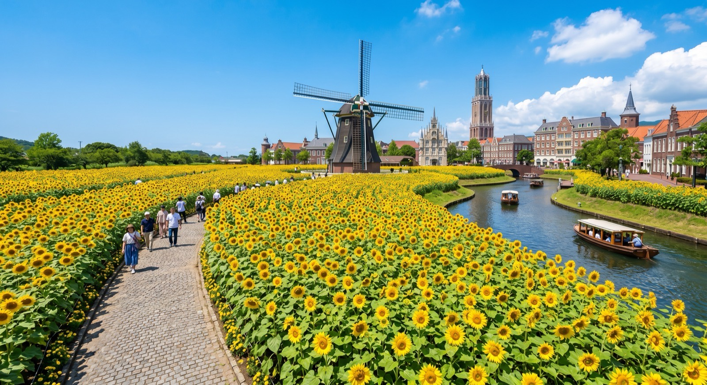
エリア：長崎県佐世保市 ベストシーズン：7月〜8月
ハウステンボスはオランダの街並みを再現した日本最大のテーマパーク（152万㎡）で、夏は100万本のひまわり畑と運河が彩る壮大な光景が広がります。2026年夏は九州最大級の花火大会「九州一花火大会」も開催予定で、ヨーロッパ風の街並みを背景にした花火は他では見られない唯一無二の景色です。
📍 アクセス・実用情報
- 電車：JR大村線「ハウステンボス駅」下車すぐ（博多から特急で約1時間45分）
- 入場料：1DAYパスポート 大人7,400円
- サマーイベント：プール・ウォーターパーク、ひまわり迷路、ナイトプール
- 宿泊：場内ホテル「ホテルヨーロッパ」「ホテルアムステルダム」で非日常ステイ
- 夜の見どころ：光と噴水のショー、イルミネーション運河クルーズ
14 岐阜・白川郷 ― 合掌造りの世界遺産集落と夏の田園風景
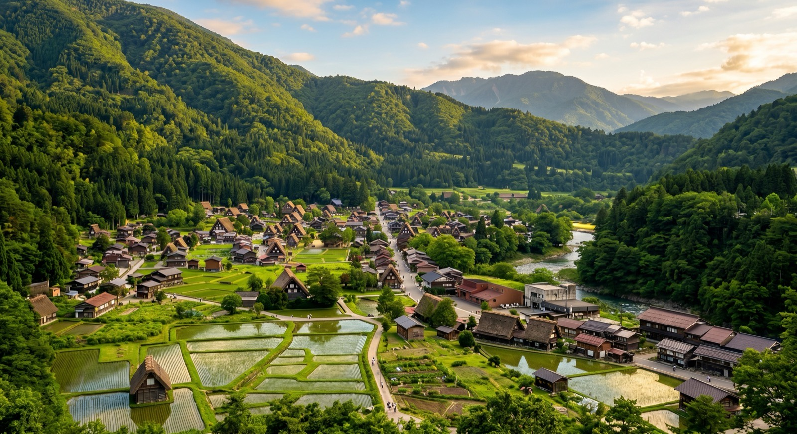
エリア：岐阜県大野郡白川村 ベストシーズン：6月〜8月
白川郷は1995年にユネスコ世界文化遺産に登録された合掌造りの集落で、冬の雪景色が有名ですが、夏は水田に映る合掌造りの家々と青々とした山々のコントラストが息をのむ美しさです。荻町城跡展望台からの俯瞰ショットは、まるで絵本の世界です。
📍 アクセス・実用情報
- バス：高山駅から約50分（濃飛バス 片道2,600円）、金沢駅から約1時間15分
- 駐車場：せせらぎ公園駐車場 1,000円（マイカーの場合）
- おすすめ体験：合掌造り民家の内部見学（和田家 300円）、どぶろく（濁り酒）試飲
- 宿泊：合掌造りの民宿に泊まる体験が人気（1泊2食 約10,000〜15,000円）
- 展望台：荻町城跡展望台は徒歩約15分。シャトルバスも運行（片道200円）
15 北海道・小樽 ― ノスタルジックな運河の街とビール＆スイーツ
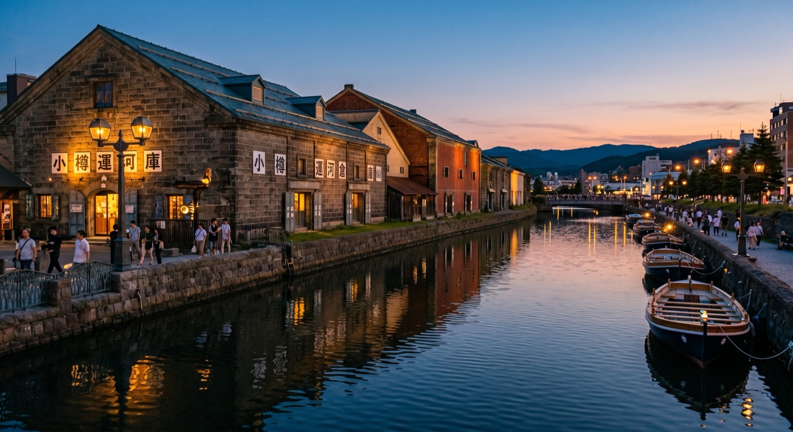
エリア：北海道小樽市 ベストシーズン：7月〜8月
小樽は明治〜大正時代の石造り倉庫群が並ぶ小樽運河で有名なノスタルジックな港町です。夏は涼しい北海道の気候（平均気温22℃前後）の中、小樽潮まつりで街全体が活気に包まれます。運河クルーズ、ガラス工芸体験、小樽ビール、ルタオのスイーツなど、大人の夏旅に最適なデスティネーションです。
📍 アクセス・実用情報
- 電車：JR「札幌駅」から快速エアポートで約32分「小樽駅」下車
- 運河クルーズ：約40分 1,500円（デイクルーズ）、ナイトクルーズは1,800円
- おすすめグルメ：小樽寿司（回転寿司でも絶品）、ルタオのドゥーブルフロマージュ、小樽ビール醸造所での地ビール
- ガラス体験：北一硝子で吹きガラス体験（約3,500円）
- 小樽潮まつり：7月下旬開催。約3,000人の「潮ねりこみ」パレードと花火大会
まとめ：2026年夏の日本旅行を最高の体験にするために
2026年夏の日本は、北海道のラベンダー畑から沖縄の透明な海まで、地域ごとに全く異なる魅力が待っています。インバウンド観光客が増加する中、事前の情報収集と予約が快適な旅行の鍵となります。
🎌 夏の日本旅行のポイント：
日本への旅行プロモーションや、中国人観光客向けのインバウンドマーケティングをお考えの方は、ぜひお問い合わせください。PROTECHは小紅書・大衆点評・抖音を活用した訪日観光客の集客を、ワンストップでご支援いたします。